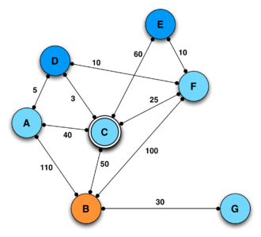

PORTFOLIO:
I've created a sleek, responsive portfolio using HTML and CSS, featuring three main sections: Home, Projects, and Contact. The Home section presents my skills, education, projects, and experience, offering a comprehensive overview of my qualifications. The Projects section showcases detailed descriptions and screenshots of my work, demonstrating my capabilities. The Contact section includes my address and a message form for easy communication. Each section is designed with user-friendly navigation and visually appealing elements, ensuring an engaging and professional presentation of my work.
I've created a sleek, responsive portfolio using HTML and CSS, featuring three main sections: Home, Projects, and Contact. The Home section presents my skills, education, projects, and experience, offering a comprehensive overview of my qualifications. The Projects section showcases detailed descriptions and screenshots of my work, demonstrating my capabilities. The Contact section includes my address and a message form for easy communication. Each section is designed with user-friendly navigation and visually appealing elements, ensuring an engaging and professional presentation of my work.

RESTAURANT MANAGEMENT SYSTEM:
Created a comprehensive software solution to optimize restaurant operations. The application integrates menu management, order processing, payment handling, and employee management. Leveraging Object-Oriented Programming (OOP) principles in Java, the solution ensures maintainability and scalability, providing a robust framework for future enhancements. The system streamlines daily tasks, enhances efficiency, and supports the seamless coordination of various functions within the restaurant, ultimately contributing to improved customer experience and operational effectiveness. Designed with a focus on modularity, the software allows easy updates and customization, adapting to the evolving needs of the restaurant industry.
Created a comprehensive software solution to optimize restaurant operations. The application integrates menu management, order processing, payment handling, and employee management. Leveraging Object-Oriented Programming (OOP) principles in Java, the solution ensures maintainability and scalability, providing a robust framework for future enhancements. The system streamlines daily tasks, enhances efficiency, and supports the seamless coordination of various functions within the restaurant, ultimately contributing to improved customer experience and operational effectiveness. Designed with a focus on modularity, the software allows easy updates and customization, adapting to the evolving needs of the restaurant industry.

ALERT SYSTEM:
Developed an embedded alert system incorporating a servo motor, ultrasonic sensor, Arduino Uno microcontroller, and a buzzer to detect nearby objects and emit warning signals. Leveraging LabVIEW and Arduino IDE for software development, the system showcases applications in radar systems, level indicators, and military devices. The integration of these components ensures precise object detection and reliable alerts, enhancing safety and efficiency across various sectors. The design prioritizes real-time responsiveness and adaptability, offering a versatile solution for environments where proximity detection is critical. This innovative system underscores the potential of embedded technology in diverse practical applications.
Developed an embedded alert system incorporating a servo motor, ultrasonic sensor, Arduino Uno microcontroller, and a buzzer to detect nearby objects and emit warning signals. Leveraging LabVIEW and Arduino IDE for software development, the system showcases applications in radar systems, level indicators, and military devices. The integration of these components ensures precise object detection and reliable alerts, enhancing safety and efficiency across various sectors. The design prioritizes real-time responsiveness and adaptability, offering a versatile solution for environments where proximity detection is critical. This innovative system underscores the potential of embedded technology in diverse practical applications.

OLSR ROUTING PROTOCOL IN MOBILE AD HOC NETWORKS:
The study evaluates the performance of the Optimized Link State Routing (OLSR) protocol in Mobile Ad hoc Networks (MANETs) at varying mobility speeds. Utilizing Multipoint Relay (MPR) technology, OLSR reduces network overhead and efficiently distributes packets. By simulating different mobility scenarios using Network Simulator 3 (NS-3), the research measures average packet throughput, packet delivery ratio (PDR), and average packet latency. The findings provide valuable insights into OLSR's effectiveness in high-mobility environments, contributing to a better understanding of its performance characteristics and relevance in real-world ad hoc network deployments.
The study evaluates the performance of the Optimized Link State Routing (OLSR) protocol in Mobile Ad hoc Networks (MANETs) at varying mobility speeds. Utilizing Multipoint Relay (MPR) technology, OLSR reduces network overhead and efficiently distributes packets. By simulating different mobility scenarios using Network Simulator 3 (NS-3), the research measures average packet throughput, packet delivery ratio (PDR), and average packet latency. The findings provide valuable insights into OLSR's effectiveness in high-mobility environments, contributing to a better understanding of its performance characteristics and relevance in real-world ad hoc network deployments.